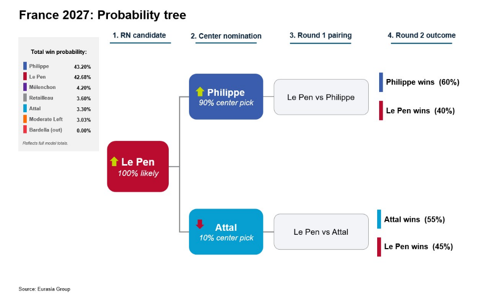
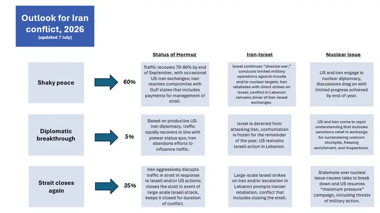
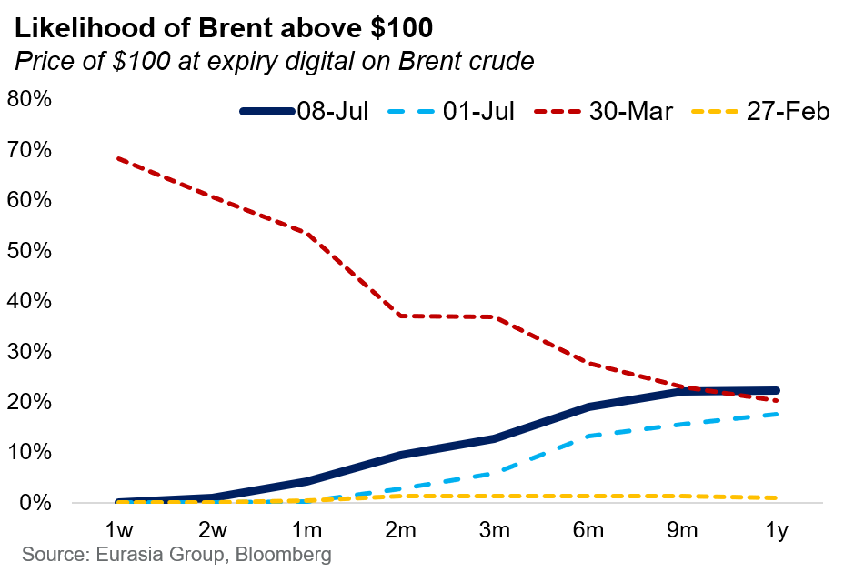
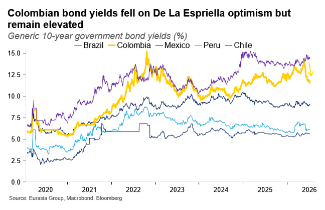

|
08 Jul 2026 08:34 EDT |
||
|
|||
|
|||
summary
|
|||
the top lineFrance—Le Pen’s return to the race makes a far-right victory more likely next year
 Iran, MENA Crisis—Skirmishing will continue as Iran pushes its luck in Hormuz
  India, Japan—Modi-Takaichi summit will drive spurt of government-backed joint ventures
US, China—Letter from Cliff Kupchan: High expectations in Beijing challenge stable US-China relations
Colombia—Fiscal outlook: a conversation with Juan Sebastian Betancur
 US—Anyone but Platner leaves Democrats better off in Maine
Upcoming conference calls
|
||
eg in depthMexico—Sheinbaum moves to contain fallout from renewed scrutiny over “El Mayo” capture: Mexican President Claudia Sheinbaum presented a detailed report on the circumstances surrounding the 25 July 2024 arrest by US law enforcement agents of Ismael “El Mayo” Zambada—co-founder of the Sinaloa drug cartel—as she seeks to address renewed questions about the extent of US operations on Mexican soil. Newly released US court documents show that Zambada pleaded guilty to drug trafficking charges on 25 August 2025 and received a life sentence. Sheinbaum will try to keep the Zambada case from becoming a broader political liability and reassure her base that she will not cede further ground on sovereignty issues. Even so, the US will continue to pressure her administration through more unilateral actions as Sheinbaum refuses to extradite politicians with credible ties to criminal organizations. Read more here. Reach out to discuss: mexico@eurasiagroup.net.
Upcoming events:
The EG Daily Brief is compiled by Jens Larsen, Lucy Eve, Babak Minovi, Pietro Guglielmi, Rahul Bhatia, Marilia Sirio, Joseph Craven, Martina Silva, Sol Lopes, and Trista Kelley, with help from Marina Tavares, and Astral Betteridge. |
||
 |
closing quipTo me, I think it’s over. I don’t want to deal with them.”—US President Donald Trump said about the Iran ceasefire at the NATO summit in Ankara. |
||
 |
|||